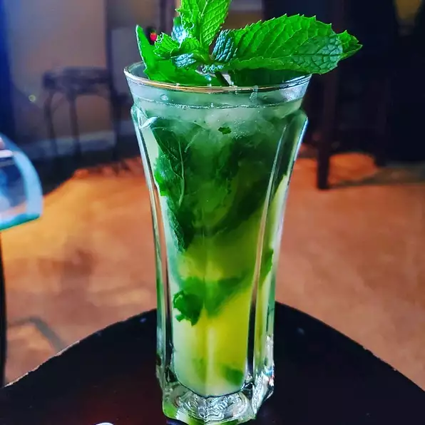

The Real Mojito

What is a Mojito?
A mojito is a classic highball drink that originated in Cuba. Not surprisingly, this cocktail uses ingredients indigenous to Cuba, including rum, lime, mint,
and sugar. The mixture is topped off with a little club soda to create a thirst-quenching libation.
It requires a bit more labor than many mixed drinks, as it involves first muddling fresh mint, lime, and sugar together to release the flavors.
But it's well worth it for a refreshing, fizzy, and mildly sweet rum cocktail that remains one of the most popular to this day.
Ingredients
- 10 fresh mint leaves
- 1/2 medium lime, cut into 3 wedges, divided
- 2 tablespoons white sugar, or to taste
- 1 cup ice cubes, or as needed
- 1 1/2 fluid ounces white rum
- 1/2 cup club soda, or as needed
Directions
Step One:
Place mint leaves and 1 lime wedge into a sturdy glass.
- Use a muddler and crush to release mint oils and lime juice
Step Two:
Add remaining lime wedges and 2 tablespoons sugar, and muddle again to release the lime juice.
- Do not strain the mixture
Step Three:
Fill the glass almost to the top with ice. Pour in rum and fill the glass with club soda.Step Four:
Stir, taste, and add more sugar if desired.